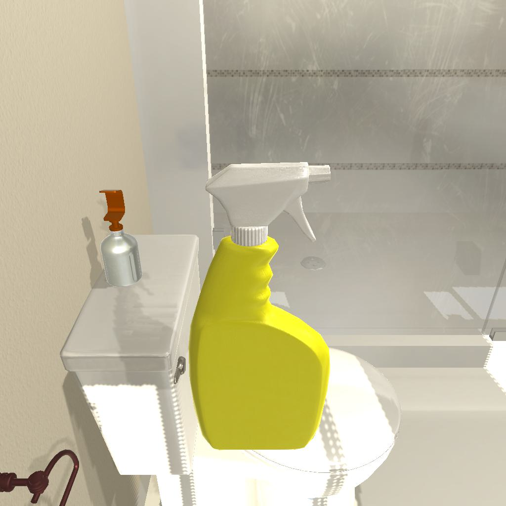

---------------------------------------------------------task: 28---------------------------------------------------------
--------------------------------------------------------------------------------------------------------------------------------------------------------------------
--------------------------------------------------------------------------------------------------------------------------------------------------------------------
Step:--------------------------------------------------------------------------17-------------------------------------------------------------------------------
----------------------------------------
VLM Prompt:
Image1:
**Instruction**
1. Analyze the provided image to identify all visible household objects, focusing on those relevant to the task description "find two spraybottle and put them in toilet."
2. Use the analysis of the image and the task hint "The agent must find an object of the desired type, pick it up, find the correct location to place it, put it down there, then look for another object of the desired type, pick it up, return to previous location, and put it down there with the other object." to answer the question: what is the most reasonable action in the choices for the task description "find two spraybottle and put them in toilet"?
4. Decide and write the answer using the template: The answer is: (i): , where i is the real number. If there is no desired object in the image, search every place based on **Initial Observation** to find the object. And if no one is exactly correct, choose a similar answer.
**Initial Observation**
You are in the middle of a room. Looking quickly around you, you can see bathtub (1), bathtubbasin (1), cart (1), sink (1), garbagecan (1), sinkbasin (1), countertop (1), drawer (1-4), toilet (1), toiletpaperhanger (1)
**Answer Choices**
(1): go to bathtub 1
(2): go to bathtubbasin 1
(3): go to cart 1
(4): go to sink 1
(5): go to garbagecan 1
(6): go to sinkbasin 1
(7): go to drawer 1
(8): go to drawer 2
(9): go to drawer 3
(10): go to drawer 4
(11): go to toiletpaperhanger 1
(12): put spraybottle 1 in/on toilet 1
(13): examine spraybottle 1
(14): examine toilet 1
**Answer**
Let's think step by step by following the instructions.
----------------------------------------
----------------------------------------
Original Response:
The image shows a single spray bottle on a countertop. According to the task description, the goal is to find two spray bottles and put them in the toilet.
Since we only see one spray bottle in the image, the first action should be to pick up the visible spray bottle. However, there is no action listed that directly states "pick up spray bottle 1". The closest action related to the spray bottle is to examine it, which may imply picking it up to inspect it before moving it to the desired location.
The next steps after picking up the first spray bottle would be to find the second spray bottle and then place both in the toilet. But since we have not yet found the second spray bottle, we cannot perform the action of putting them in the toilet yet.
Given the available answer choices, the most reasonable action to start with would be to examine the spray bottle that is visible in the image.
The answer is: (13): examine spraybottle 1
----------------------------------------
----------------------------------------
>>> Refine Original VLM Response and Get Pure Action: examine spraybottle 1
----------------------------------------
-----------------------------------------------------------------
Running time: 114.98530960083008 seconds
Total Money: 10.195350000000001
-----------------------------------------------------------------
-----------------------------------------------------------------
Text Observation:This is a normal spraybottle 1
-----------------------------------------------------------------
UNSUCCEED